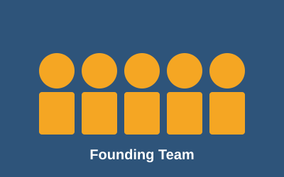
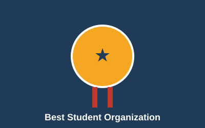

Our Mission
Founded in 2018 by a small group of computer science students, the Windsor Coding Club was born from a simple idea: learning to code is easier and far more fun when you do it together. Today we are one of the largest student tech communities on campus, with members from every faculty and year.
We believe that great software is built by diverse teams. That is why our doors are open to anyone curious about technology, regardless of background or experience level.
Achievements & Goals
Over the past several years, our members have launched startups, published open-source libraries, and landed internships at companies like Google, Shopify, and Microsoft. Looking ahead, we aim to expand our outreach to local high schools, host the largest student hackathon in Southern Ontario, and continue making tech education accessible to all.
Our Timeline
- 2018 — Club founded by 7 CS students in a Lambton Tower classroom.
- 2019 — Hosted our first hackathon with 50 participants.
- 2021 — Launched an online mentorship program during the pandemic.
- 2023 — Reached 300 active members and partnered with 5 local startups.
- 2025 — Won the "Best Student Organization" award from the university.
- 2026 — Expanding to host the first inter-university coding competition.
Moments From Our Journey

